Faculty and Staff Scientists
Shao, Zhen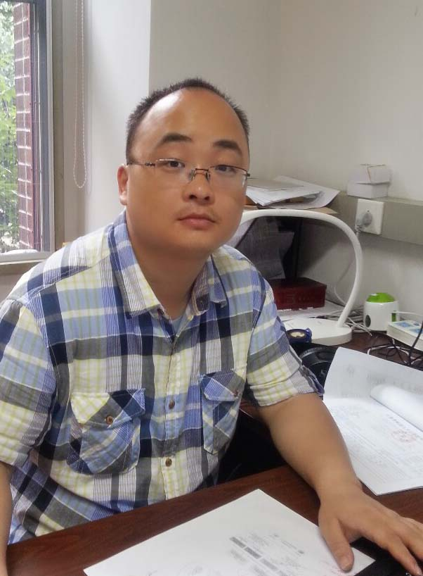 |
Group LeaderEmail: shaozhen@picb.ac.cn Office: Shengli Building 330 Tel. number: 021-54920367 Education and Work Experience: From 2021.1: Principle Investigator, CAS Key Lab of Computational Biology, Shanghai Institute of Nutrition and Health, CAS 2013.10 - 2020.12: Principle Investigator, CAS-MPG Partner Institute for Computational Biology, Shanghai Institute of Nutrition and Health (formed in 2017.1), Shanghai Institutes for Biological Sciences, Chinese Academy of Sciences 2010.6 - 2013.9: Postdoctoral Fellow, Department of Pediatric Oncology, Dana Farber Cancer Institute; Division of Hematology/Oncology, Children’s Hospital Boston; Harvard Medical School; 2009.4 - 2010.5: Postdoctoral Fellow, Department of Biostatistics and Computational Biology, Dana Farber Cancer Institute and Department of Biostatistics, Harvard School of Public Health; 2003.9 - 2008.12: Ph.D. of Theoretical Biophysics, Institute of Theoretical Physics, Chinese Academy of Sciences, China; 1999.9 - 2003.7: Bachelor of Theoretical Physics, University of Science and Technology of China. |
Shiqi Tu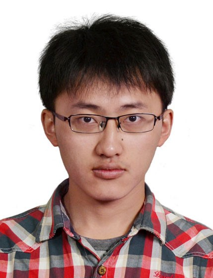 |
Associate ProfessorEmail: tushiqi@picb.ac.cn Office: Shengli Building 334 Tel. Number: 021-54920485 Education and Work Experience: From 2022.10: Associate Professor, CAS Key Lab of Computational Biology, Shanghai Institute of Nutrition and Health, CAS 2021.1 - 2022.10: Postdoctoral Fellow, CAS Key Lab of Computational Biology, Shanghai Institute of Nutrition and Health, CAS 2020.2 - 2020.12: Postdoctoral Fellow, CAS-MPG Partner Institute for Computational Biology, SIBS, CAS 2013.9 - 2019.7: Ph.D. of Computational Biology, CAS-MPG Partner Institute for Computational Biology, SIBS, CAS 2009.9 - 2013.7: Bachelor of System Biology, University of Science and Technology of China |
Shi, Ge |
Research AssistantEmail: shige@picb.ac.cn Office: Shengli Building 246 Tel. Number: 021-54920476 Education and Work Experience: From 2021.1: Research Assistant, CAS Key Lab of Computational Biology, Shanghai Institute of Nutrition and Health, CAS 2014.2 - 2020.12: Research Assistant, CAS-MPG Partner Institute for Computational Biology, SIBS, CAS 2013.3 - 2013.9: Intern, Shanghai Institute of Materia Medica，CAS 2009.9 - 2013.7: Bachelor of Pharmaceutical Engineering, East China University of Science and Technology |
Li, Yana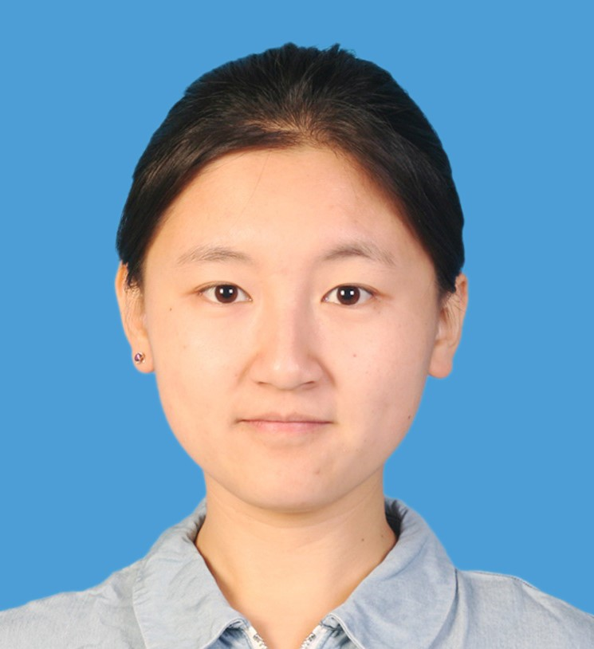 |
Postdoctoral FellowEmail: liyana@picb.ac.cn Office: Shengli Building 246 Tel. Number: 021-54920476 Education and Work Experience: From 2023.7: Postdoctoral Fellow, CAS Key Lab of Computational Biology, Shanghai Institute of Nutrition and Health, CAS 2021.1 - 2023.6: PhD Student, CAS Key Lab of Computational Biology, Shanghai Institute of Nutrition and Health, CAS 2017.9 - 2020.12: PhD Student, CAS-MPG Partner Institute for Computational Biology, SIBS, CAS 2012.9 - 2017.7: Bachelor of Bioinformatics, Harbin Medical University |
Huang, Jing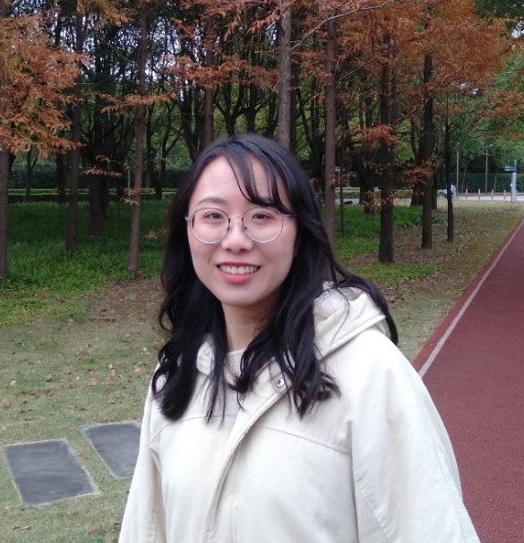 |
Postdoctoral FellowEmail: huangjing2019@sibs.ac.cn Office: Shengli Building 246 Tel. Number: 021-54920476 Education and Work Experience: From 2025.1: Postdoctoral Fellow, CAS Key Lab of Computational Biology, Shanghai Institute of Nutrition and Health, CAS 2021.1 - 2024.12: PhD Student, CAS Key Lab of Computational Biology, Shanghai Institute of Nutrition and Health, CAS 2019.9 - 2020.12: PhD Student, CAS-MPG Partner Institute for Computational Biology, SIBS, CAS 2015.9 - 2019.7: Bachelor of Bioinfomatics, Nanjing Medical University |
Tian, Feng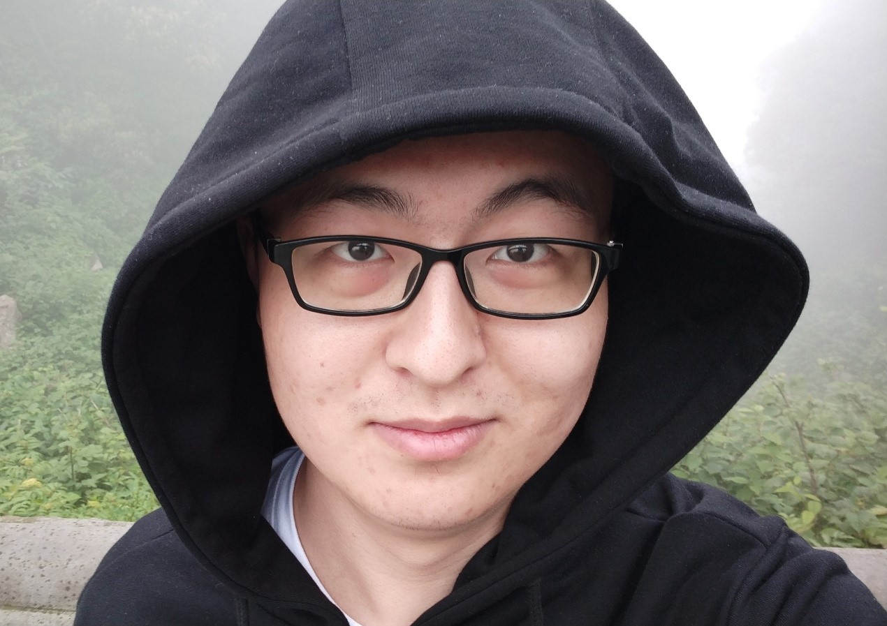 |
Postdoctoral FellowEmail: tianfeng2019@sibs.ac.cn Office: Shengli Building 334 Tel. Number: 021-54920485 Education and Work Experience: From 2026.1: Postdoctoral Fellow, CAS Key Lab of Computational Biology, Shanghai Institute of Nutrition and Health, CAS 2021.1 - 2025.12: PhD Student, CAS Key Lab of Computational Biology, Shanghai Institute of Nutrition and Health, CAS 2019.9 - 2020.12: PhD Student, CAS-MPG Partner Institute for Computational Biology, SIBS, CAS 2015.9 - 2019.7: Bachelor of Biological Technology and Bachelor of Computer Science (double major), University of Science and Technology of China |
Graduate Students
Zhou, Shuhan |
Ph.D. StudentEmail: zhoushuahan2021@sibs.ac.cn Office: Shengli Building 146 Tel. Number: 021-54920476 Education and Work Experience: From 2021.9: PhD Student, CAS Key Lab of Computational Biology, Shanghai Institute of Nutrition and Health, CAS 2016.9 - 2021.7: Bachelor of Biotechnology, Harbin Medical University |
Zhang, Xinyue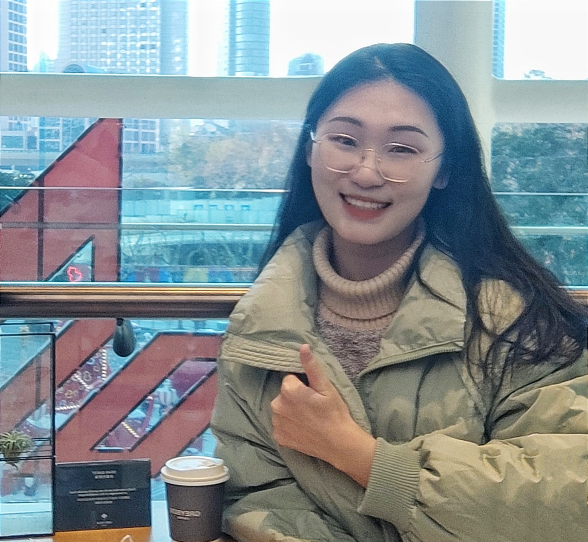 |
Ph.D. StudentEmail: zhangxinyue2021@sibs.ac.cn Office: Shengli Building 334 Tel. Number: 021-54920485 Education and Work Experience: From 2021.9: PhD Student, CAS Key Lab of Computational Biology, Shanghai Institute of Nutrition and Health, CAS 2017.9 - 2021.7: Bachelor of Bioinfomatics, Dalian University of Technology |
Zheng, Anqin |
Ph.D. StudentEmail: zhenganqin2022@sinh.ac.cn Office: Shengli Building 334 Tel. Number: 021-54920485 Education and Work Experience: From 2022.9: PhD Student, CAS Key Lab of Computational Biology, Shanghai Institute of Nutrition and Health, CAS 2018.9 - 2022.7: Bachelor of Computational Biology, Sichuan University |
Zeng, Yi |
Ph.D. StudentEmail: zengyi2022@sinh.ac.cn Office: Shengli Building 246 Tel. Number: 021-54920476 Education and Work Experience: From 2022.9: PhD Student, CAS Key Lab of Computational Biology, Shanghai Institute of Nutrition and Health, CAS 2018.9 - 2022.7: Bachelor of Pharmacy, Shenzhen University |
Huang, Xintong |
Ph.D. StudentEmail: huangxintong2023@sinh.ac.cn Office: Shengli Building 146 Tel. Number: 021-54920485 Education and Work Experience: From 2023.9: PhD Student, CAS Key Lab of Computational Biology, Shanghai Institute of Nutrition and Health, CAS 2019.9 - 2023.7: Bachelor of Bioinformatics, Tongji University |
Chai, Xuran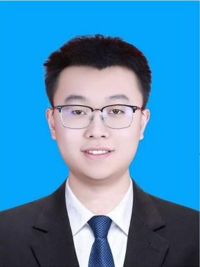 |
Ph.D. StudentEmail: chaixuran2024@sinh.ac.cn Office: Shengli Building 146 Tel. Number: 021-54920476 Education and Work Experience: From 2024.9: PhD Student, CAS Key Lab of Computational Biology, Shanghai Institute of Nutrition and Health, CAS 2017.9 - 2021.7: Bachelor of Biological Science, Sichuan University |
Xu, Mengchu |
Ph.D. StudentEmail: xumengchu2024@sinh.ac.cn Office: Shengli Building 146 Tel. Number: 021-54920476 Education and Work Experience: From 2024.9: PhD Student, CAS Key Lab of Computational Biology, Shanghai Institute of Nutrition and Health, CAS 2020.9 - 2024.7: Bachelor of Biomedical Engineering, China Medical University |
He, Yue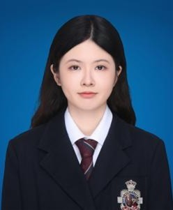 |
Ph.D. StudentEmail: heyue2025@sinh.ac.cn Office: Shengli Building 246 Tel. Number: 021-54920476 Education and Work Experience: From 2025.9: PhD Student, CAS Key Lab of Computational Biology, Shanghai Institute of Nutrition and Health, CAS 2020.9 - 2025.6: Bachelor of Basic medicine, Central South University |
Alumni
Zhaohui Gong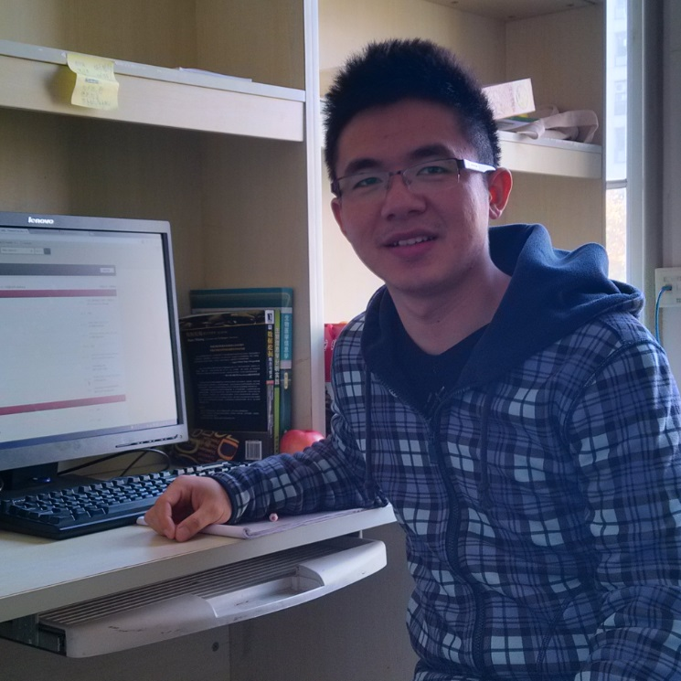 |
Research AssistantEmail: gongzhaohui@picb.ac.cn Office: Shengli Building 334 Tel. Number: 021-54920485 Research & Other Interests: Education and Work Experience: From 2015.7: Industry 2013.9 - 2015.6: Reaearch Assistant, CAS-MPG Partner Institute for Computational Biology, SIBS, CAS 2013.3 - 2013.9: Development Engineer, FineReport INC., Nanjing 2008.8 - 2012.7: Bachelor of System Biology, University of Science and Technology of China |
Wang, Yuangao |
Assistant ProfessorEmail: wangyuangao@picb.ac.cn Office: Shengli Building 246 Tel. Number: 021-54920476 Education and Work Experience: From 2023.01: Principle Investigator, Shanghai Institute of Nutrition and Health, CAS 2017.10 - 2023.01: Post-doctoral Researcher, Harvard Medical School, U.S. 2015.8 - 2017.9 Assistant Professor, CAS-MPG Partner Institute for Computational Biology, SIBS, CAS 2008.9 - 2015.6: Ph.D. in Biochemistry and Molecular Biology, Shanghai Institutes for Biological Sciences, Chinese Academy of Sciences; 2004.9 - 2008.6: Bachelor of Biology, Wuhan University; |
Li, Mushan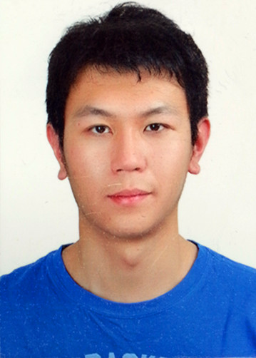 |
Research AssistantEmail: musanlie@gmail.com Office: Shengli Building 246 Tel. Number: 021-54920476 Education and Work Experience: From 2019: PhD Student, Statistics Program, Pennsylvania State University, U.S. 2014.3 - 2019: Research Assistant, CAS-MPG Partner Institute for Computational Biology, SIBS, CAS 2011.9 - 2012.7: Exchange student in Mathematical school, Shandong University 2009.9 - 2013.6: Bachelor of Information and Computational Science, Xiamen University |
Yao, Jiaying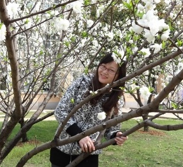 |
Ph.D. StudentEmail: yaojiaying@picb.ac.cn Office: Shengli Building 334 Tel. Number: 021-54920485 Education and Work Experience: From 2019.7: Industry 2013.9 - 2019.7: PhD of Computational Biology, CAS-MPG Partner Institute for Computational Biology, SIBS, CAS 2009.9 - 2013.7: Bachelor of Bioengineering, Huazhong Agricultural University |
Sun, Hongduo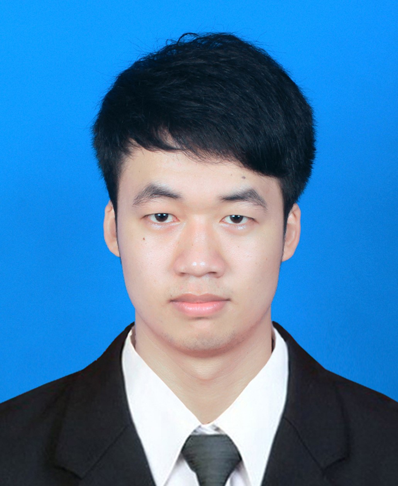 |
Ph.D. StudentEmail: sunhongduo@picb.ac.cn Office: Shengli Building 246 Tel. Number: 021-54920476 Education and Work Experience: From 2021.9: Industry 2021.1 - 2021.7: PhD Student, CAS Key Lab of Computational Biology, Shanghai Institute of Nutrition and Health, CAS 2015.9 - 2020.12: PhD Student, CAS-MPG Partner Institute for Computational Biology, SIBS, CAS 2011.9 - 2015.7: Bachelor of Biomedical Engineering, Southwest Jiaotong University |
Tan, Fengxiang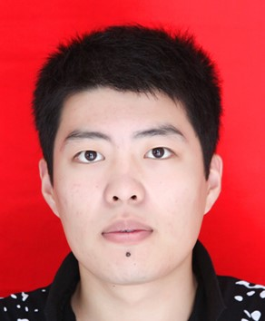 |
Ph.D. StudentEmail: tanfengxiang@picb.ac.cn Office: Shengli Building 334 Tel. Number: 021-54920485 Education and Work Experience: From 2023.7: Postdoctoral Fellow, Guangzhou Lab 2021.1 - 2023.6: PhD Student, CAS Key Lab of Computational Biology, Shanghai Institute of Nutrition and Health, CAS 2016.9 - 2020.12: PhD Student, CAS-MPG Partner Institute for Computational Biology, SIBS, CAS 2012.9 - 2016.7: Bachelor of Statistics, Shandong University |
Chen, Haojie |
Ph.D. StudentEmail: chenhaojie@picb.ac.cn Office: Shengli Building 334 Tel. Number: 021-54920485 Education and Work Experience: From 2023.7: Postdoctoral Fellow, Sun Yat-sen University Cancer Center 2021.1 - 2023.6: PhD Student, CAS Key Lab of Computational Biology, Shanghai Institute of Nutrition and Health, CAS 2017.9 - 2020.12: PhD Student, CAS-MPG Partner Institute for Computational Biology, SIBS, CAS 2013.9 - 2017.7: Bachelor of Biological Science, South China Agriculture University |
Chen, Weiyan |
Ph.D. StudentEmail: chenweiyan@picb.ac.cn Office: Shengli Building 246 Tel. Number: 021-54920476 Education and Work Experience: From 2024.7: Postdoctoral Fellow, University of Copenhagen 2021.1 - 2023.12: PhD Student, CAS Key Lab of Computational Biology, Shanghai Institute of Nutrition and Health, CAS 2017.9 - 2020.12: PhD Student, CAS-MPG Partner Institute for Computational Biology, SIBS, CAS 2013.9 - 2017.7: Bachelor of Mathematics and Applied Mathematics, Ocean University of China |
Guo, Zhijie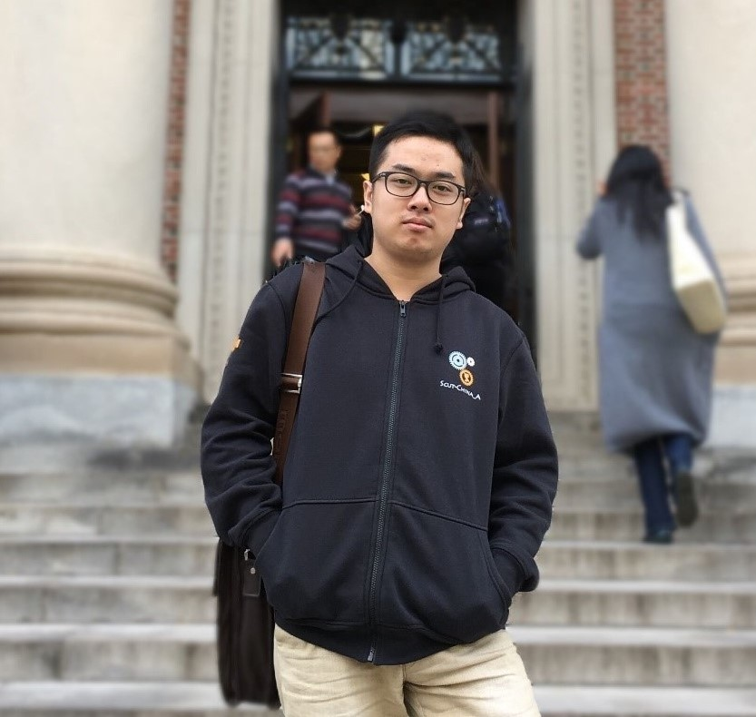 |
Ph.D. StudentEmail: guozhijie@picb.ac.cn Office: Shengli Building 334 Tel. Number: 021-54920485 Education and Work Experience: From 2025.6: Industry 2021.1 - 2024.12: PhD Student, CAS Key Lab of Computational Biology, Shanghai Institute of Nutrition and Health, CAS 2018.9 - 2020.12: PhD Student, CAS-MPG Partner Institute for Computational Biology, SIBS, CAS 2014.9 - 2018.7: Bachelor of Biotechnology, South China University of Technology |
Gui, Xiuqi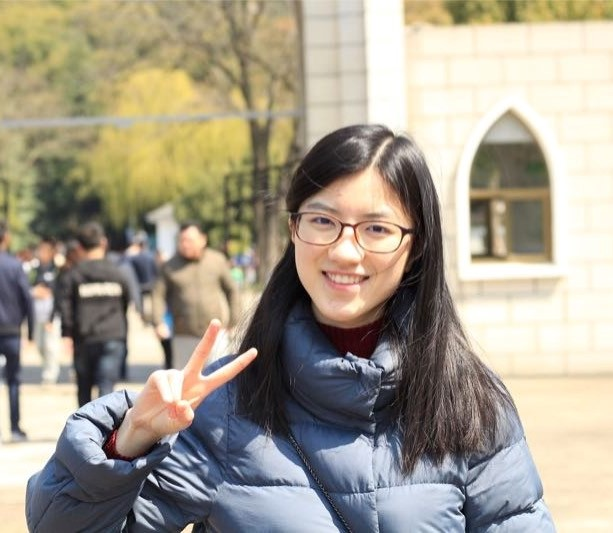 |
Ph.D. StudentEmail: guixiuqi@picb.ac.cn Office: Shengli Building 334 Tel. Number: 021-54920485 Education and Work Experience: From 2025.7: Postdoctoral Fellow, Sun Yat-sen University Cancer Center 2023.7 - 2025.6: Postdoctoral Fellow, CAS Key Lab of Computational Biology, Shanghai Institute of Nutrition and Health, CAS 2021.1 - 2023.6: PhD Student, CAS Key Lab of Computational Biology, Shanghai Institute of Nutrition and Health, CAS 2018.9 - 2020.12: PhD Student, CAS-MPG Partner Institute for Computational Biology, SIBS, CAS 2012.9 - 2016.7: Bachelor of Bioinfomatics, Huazhong University of Science and Technology |
Yin, Qianqian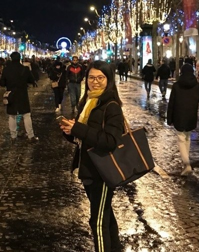 |
Postdoctoral FellowEmail: yinqianqian@picb.ac.cn Office: Shengli Building 246 Tel. Number: 021-54920476 Education and Work Experience: From 2025.8: Young Investigator, Shanghai Jiaotong Medical School 2024.9 - 2025.8: Associate Professor, CAS Key Lab of Computational Biology, Shanghai Institute of Nutrition and Health, CAS 2021.1 - 2024.8: Postdoctoral Fellow, CAS Key Lab of Computational Biology, Shanghai Institute of Nutrition and Health, CAS 2018.8 - 2020.12: Postdoctoral Fellow, CAS-MPG Partner Institute for Computational Biology, SIBS, CAS 2014.9 - 2018.6: Ph.D. of Biochemistry and Molecular Biology, Shanghai Institute of Biochemistry and Cell Biology, SIBS, CAS 2009.9 - 2012.6: Master of Biochemistry and Molecular Biology, Shanghai Normal University 2005.9 - 2009.7: Bachelor of Biology Science, Shanghai Normal University |
Guo, Xuan |
Ph.D. StudentEmail: guoxuan2020@sibs.ac.cn Office: Shengli Building 334 Tel. Number: 021-54920485 Education and Work Experience: From 2026.1: Postdoctoral Fellow, Shanghai Academy of Forensic Sciences 2020.9 - 2025.12: PhD Student, CAS Key Lab of Computational Biology, Shanghai Institute of Nutrition and Health, CAS 2016.9 - 2020.7: Bachelor of Mathematics and Applied Mathematics, Lanzhou University |